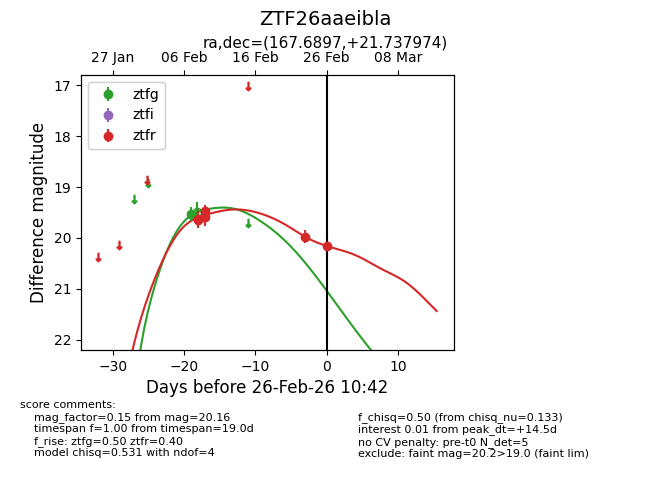
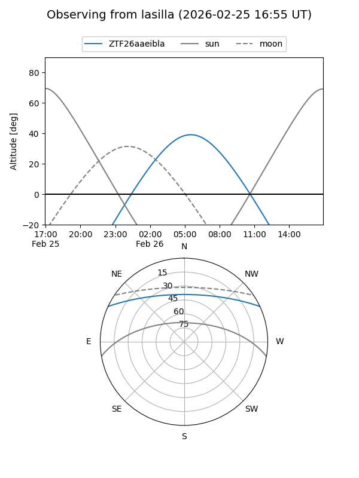
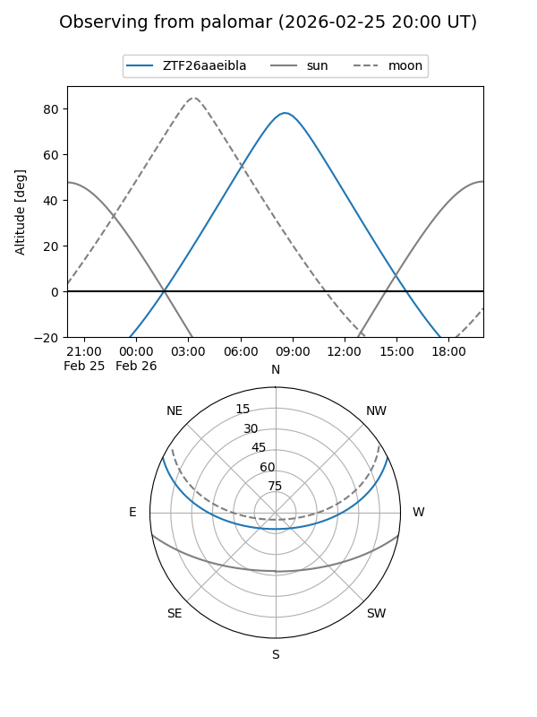
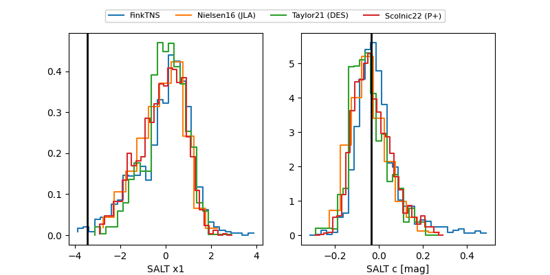

ZTF26aaeibla
Target ZTF26aaeibla at 2026-02-26 10:43
Aliases and brokers:
FINK: link
Lasair: link
ALeRCE: link
alt names
ZTF26aaeibla (ztf,fink_ztf)
Coordinates:
equatorial (ra, dec) = 167.6897,+21.73797
equatorial (HMS+DMS) = 11:10:45.54,+21:44:16.71
galactic (l, b) = (220.6760,+66.50349)
Flags:
Photometry:
last ztfg=19.53, ztfr=20.16
1 ztfg, 6 ztfr detections
Lightcurve

Visibility


Additional plots
